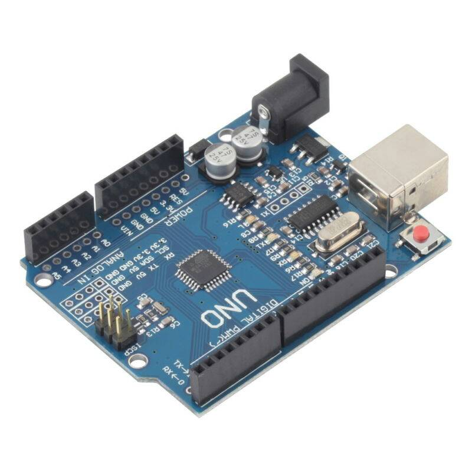
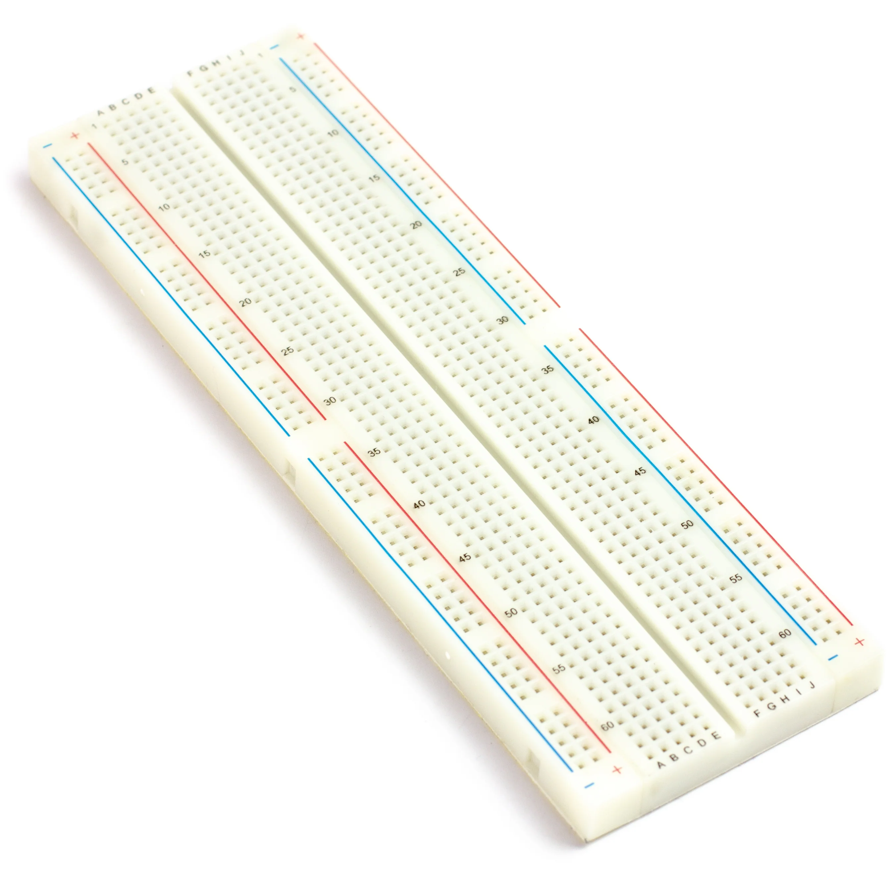
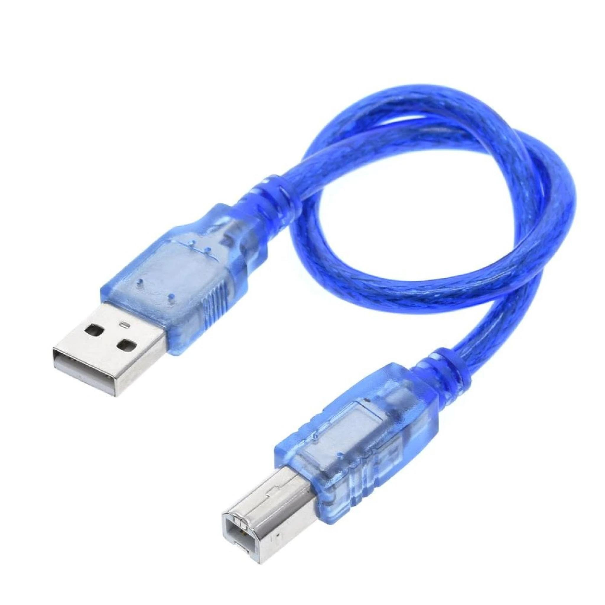
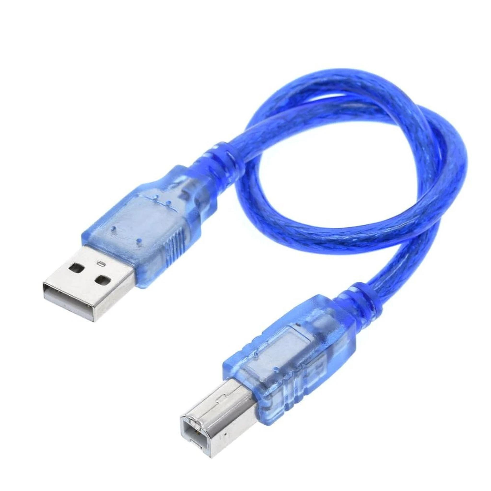

seven segment adalah alat yang digunakan untuk menampilkan angka desimal dan terdiri dari 7 batang LED yang tersusun membentuk angka 8. Alat ini juga bisa menampilkan huruf A-F yang disebut DOT MATRIKS. Prinsip kerjanya adalah menerima input berupa biner lalu melakukan konversi dan memberikan output angka desimal. Ada dua jenis seven segment, yaitu common katoda dan common anoda. Common katoda aktif pada logika 1, sedangkan common anoda aktif pada logika 0
Alat Dan Bahan
  


Langkah-Langkah Penyelesaian
1. Siapkan komponen yang diperlukan:
A. Arduino board.
B. Display Seven Segment (Common Anode atau Common Cathode).
C. 8 kabel jumper.
2. Sambungkan pin Arduino dengan pin Seven Segment:
A. Pin DP (titik desimal) pada Seven Segment dihubungkan ke pin 5 pada
Arduino.
B. Pin G (segment G) pada Seven Segment dihubungkan ke pin 9 pada
Arduino.
C. Pin F (segment F) pada Seven Segment dihubungkan ke pin 8 pada
Arduino.
D. Pin E (segment E) pada Seven Segment dihubungkan ke pin 7 pada
Arduino.
E. Pin D (segment D) pada Seven Segment dihubungkan ke pin 6 pada
Arduino.
F. Pin C (segment C) pada Seven Segment dihubungkan ke pin 4 pada
Arduino.
G. Pin B (segment B) pada Seven Segment dihubungkan ke pin 3 pada
Arduino.
H. Pin A (segment A) pada Seven Segment dihubungkan ke pin 2 pada
Arduino.
3. Sambungkan Arduino ke komputer menggunakan kabel USB untuk
mengunggah program dan memberi daya pada Arduino.
4. Buka perangkat lunak Arduino IDE di komputer Anda.
5. Buat program baru dan salin kode yang telah Anda berikan ke dalam
program tersebut.
6. Verifikasi program untuk memastikan tidak ada kesalahan penulisan
sintaksis dalam kode.
7. Unggah program ke Arduino board dengan mengklik tombol "Upload" di
Arduino IDE.
8. Setelah program terunggah, Arduino akan memulai eksekusi program
dan Seven Segment akan menampilkan angka dari 0 hingga 10 secara
berurutan.
9. Pastikan Arduino tersambung dengan Seven Segment dan bahwa
penampilan angka sesuai dengan harapan Anda.
Tutorial Pembuatan Rangkaian SevenSegment
Simak dan pahami penjelasan yang ada di dalam video untuk
langkah-langkah lebih lanjut merangkai seven segment.